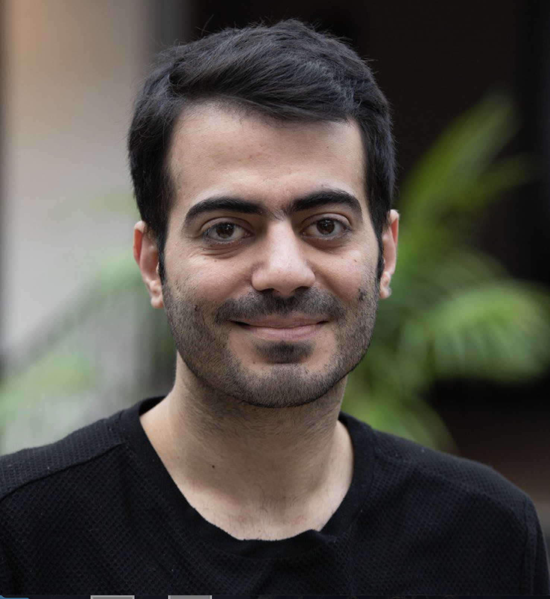

A Decoupled Alignment Kernel for Peptide Membrane Permeability Predictions
arXiv, 2025

Postdoctoral Researcher
Machine Learning · Generative Models · Language Models · Deep Learning
I am a postdoctoral researcher working on machine learning and artificial intelligence. My research interests include generative models, language models, deep learning, representation learning, and their applications to scientific and real-world problems.
I am particularly interested in developing machine learning methods that can learn meaningful representations from complex and structured data, as well as exploring modern generative and foundation models for scientific applications.
Our work investigates interpretable attribution methods for multimodal Transformer models on longitudinal data.
arXiv, 2025
Machine Learning for Health (ML4H), 2025